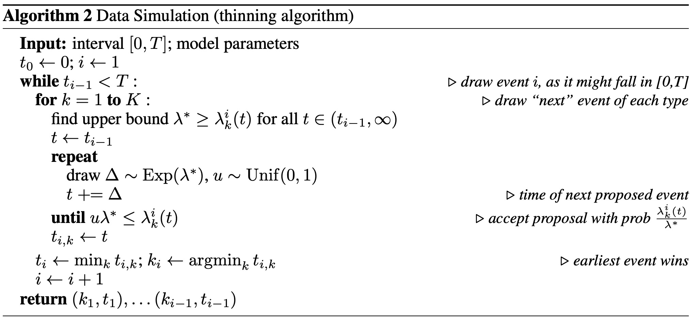

Thinning Algorithm for Sampling Event Sequences
EasyTPP’s EventSampler implements the thinning procedure associated with
Algorithm 2 of The Neural Hawkes Process: A Neurally Self-Modulating
Multivariate Point Process. Its torch
implementation is in easy_tpp/model/thinning.py.
Implementation
draw_next_time_one_step performs these operations for every history:
Evaluate total intensity at
num_samples_boundarypoints and multiply the maximum byover_sample_rateto obtain a proposal-rate bound.Draw
num_expexponential increments at that rate and applytorch.cumsum. The resulting values are accumulated proposal times, not independent absolute times.Evaluate the model’s marked intensities at the proposal times and sum over marks.
Draw uniforms and accept the first proposal satisfying the thinning criterion.
If no proposal is accepted, return
dtime_maxfor that sample. Average thenum_sampledraws with equal weights to predict the next interval.
After a time is sampled, the marked intensities at that time are normalized over event types to predict the mark.

One-step and multi-step prediction
With a thinning block in model_config, intensity-based models use
TorchBaseModel.predict_one_step_at_every_event for next-event prediction.
Set num_step_gen above 1 to activate recursive generation through
TorchBaseModel.predict_multi_step_since_last_event.
As of 0.2.4, IntensityFree also provides the marked intensity required by
the shared sampler. For its log-normal-mixture inter-event distribution,
where f and S are the mixture density and survival function. This
closed-form hazard resolves generation support tracked in issue #13. The
model’s optimized one-step override samples the mixture distribution directly;
its recursive multi-step path uses the hazard through the thinning sampler.
Multi-step generation supports right-padded batches with different sequence lengths. It computes each row’s true length from the non-padding mask, groups rows by that length, removes padding, and generates after the last real event.
thinning:
num_sample: 1
num_exp: 500
over_sample_rate: 5
num_samples_boundary: 5
dtime_max: 5
patience_counter: 5
num_step_gen: 5